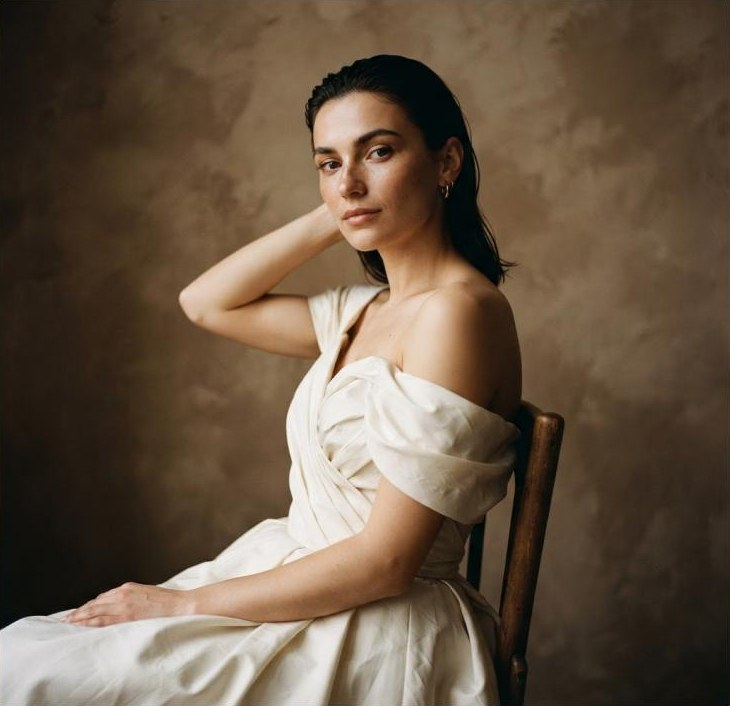
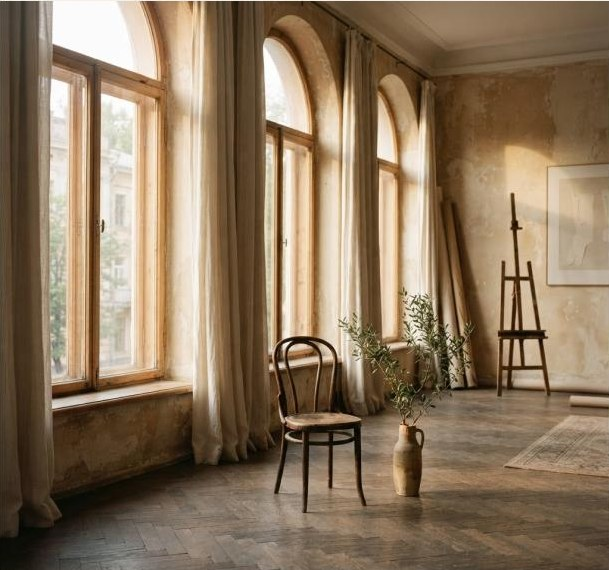

Київ, Україна · знімаємо справжнє
Там, де ви справжні.
Фотографуємо не ідеальні пози, а відчуття. Ваші жести, близькість і красу бути собою.
Знайти свою історіюМенше поз. Більше вас.
Портрети, історії, бренди
Ми віримо: найцінніше завжди між кадрами.
У паузі перед усмішкою. У дотику, якого не планували. У світлі, що на мить зробило звичайне особливим. «Між світлом» — простір, де не потрібно вміти фотографуватися: достатньо прийти й дозволити собі бути.

Не просто студія. Місце довіри.
Ми — Олена й Назар. Двоє фотографів, яких об’єднала любов до природного світла та чесних історій. У 2018 році ми створили простір, де люди важливіші за декорації.
Легко. Від першого «привіт».
Знайомимося
Розповідаєте про себе та свої бажання. Разом знаходимо настрій майбутньої зйомки.
Готуємося
Створюємо мудборд, обираємо одяг і локацію. Ви знаєте, чого очікувати.
Проживаємо момент
П’ємо каву, розмовляємо й знімаємо. Допомагаємо розслабитися та бути собою.
Зберігаємо історію
За 14 днів ви отримуєте готову серію в персональній онлайн-галереї.
Трохи менше невідомого.
Те, про що нас найчастіше питають перед першою зйомкою.